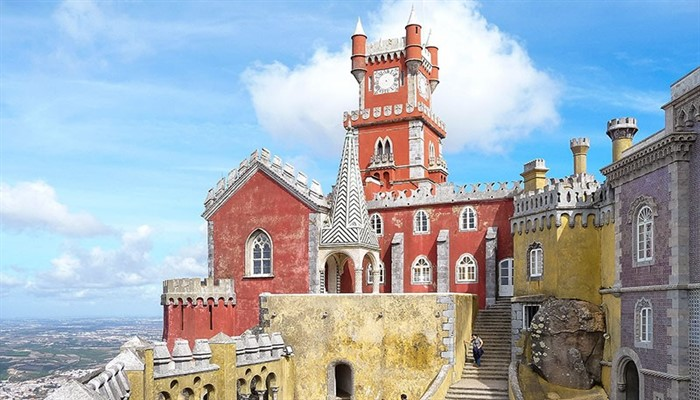

Lizbon kıyısındaki Sintra Dağı’nın eteklerine yerleşmiş olan şehir başkentten günübirlik gidip gezilecek uzaklıkta ve yemyeşil tepeler, tüm şehire serpiştirilmiş göz alıcı villalar, lüks dinlenme merkezleri, kaleleri ve Pena’s Palace gibi ünlü saraylara sahip. 1800’lü yılların ortalarında yapılmış olan Alman Neuschwanstein’in hatırası fantastik kale Portekiz’in kraliyet ailesine hizmet vermekteydi. Pena’s Sarayının çevresi egzotik ağaçlar, bitkiler ve çiçeklerle çevrilmiş bir ormanlık alan olduğundan dolayı gördüğünüzden çıkmak istemeyebilirsiniz.
Sintra’yı anlatmaya tarihinden başlamak gerekirse; yapılan arkeolojik kazılar sonucunda bölgede yaşam ilk kez Paleolitik Çağda (eski taş çağında) başladığı belirlenmiş. Roma İmparatorluğu döneminde ise şehirleşme başlamış, ardından Müslümanların egemenliğine geçmiş… Reconquista döneminde ise VI Alfonso tarafından fethedilerek Portekiz Krallığı’na bağlanmış. 1755 yılındaki Büyük Lizbon Depreminden o da büyük zarar görmüş ve 18. yüzyılda tüm yerleşim yerleri yeniden onarılmış.
Amelie, Portekiz’den ayrıldıktan sonra Fransa’ya yerleşmiş ve hayatının büyük bir bölümünü orada geçirmiş. 2. Dünya Savaşı sırasında Portekiz hükümeti onu ülkeye geri çağırmış ancak kabul etmemiş. Son Portekiz ziyaretini ise 1945 yılında, savaş sona erdikten sonra yapmış ve 1951 yılında hayatını kaybetmiş…
Sintra, tepelerin ortasına kurulmuş ve gezilecek bazı yerler tepelerin zirvesinde bulunuyor. Buralara SAKIN yürüyerek çıkmaya çalışmayın çünkü oldukça dik, dönemeçli ve yürüyebilmeniz için fazla alan yok. Sürekli arkadanızdan araba, otobüs vb. geldiği için bi köşeye sıkışarak onların geçmesini bekliyorsunuz. Çok yorucu ve çok tehlikeli. Kesinlikle yürüyerek çıkılmasını tavsiye etmiyorum. Bunun yerine toplu taşıma (otobüs) kullanabilirsiniz. Bunun detayını yazımın devamında vereceğim.
Sintra, günübirlik gelinecek bir şehir olmasından dolayı, tahmin edebileceğiniz gibi benim de seyahat ettiğim Pazar günü inanılmaz kalabalıktı. İnsan kalabalığının yanında bir de kişisel araçlarıyla gelen insanlar vardı ki hem de çok sayıda… Bunu özellikle belirtiyorum çünkü şehirde yayaların yürüyebileceği kaldırımlar son derece kısıtlı, yani yok denecek kadar neredeyse. Bu yüzden arabalara dikkat ediniz ve imkanınız varsa mutlaka hafta içi bir gün gidiniz.